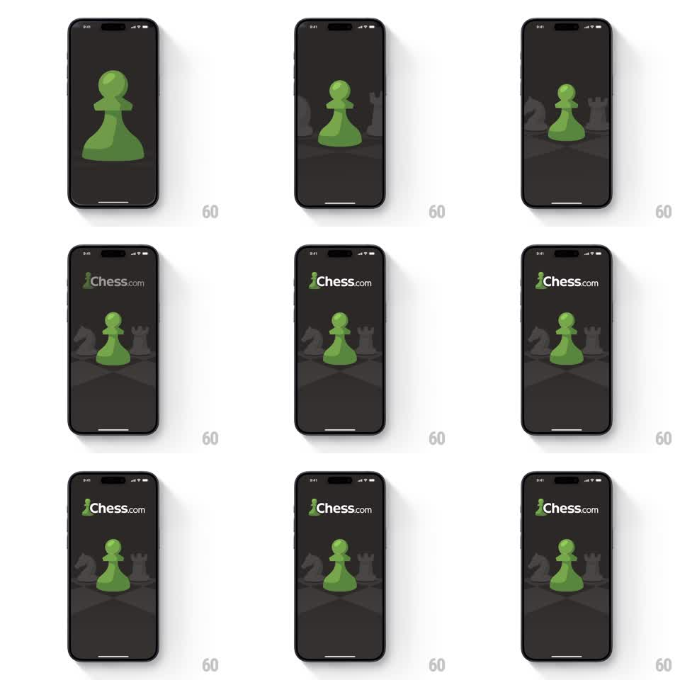

Media
Frame-by-frame

Rebuild this animation 1:1: Chess.com's splash - the green pawn slides down into center stage as the wordmark fades in above and shadowy back-rank pieces materialize behind it.

Rebuild this animation 1:1: Chess.com's splash - the green pawn slides down into center stage as the wordmark fades in above and shadowy back-rank pieces materialize behind it. ## Integration Integration: stack-agnostic spec - springs given as stiffness/damping, timed motions as duration + curve; map every value to your framework and animation library of choice. ## Scene Dark splash screen. Cast: one bright green pawn, the "Chess.com" wordmark, and dim silhouettes of the rook, knight, and queen behind a checkered floor fade. ## Motion spec Pattern: layered logo assembly, ~1.2s. - The green pawn slides down from above-center and fades in (500ms, ease-out), landing on its final spot with a tiny settle. - Background piece silhouettes fade in behind it at ~15% alpha (400ms, 100ms after the pawn starts). - The "Chess.com" wordmark fades in at the top (300ms) as the pawn lands. - The checkered floor gradient is present from frame one. - All elements hold still after assembly. ## Calibration - The pawn is the hero and lands first; the wordmark follows, never leads. - Background pieces stay dim - they are set dressing, not subjects. ## Reduced motion Everything fades in together (300ms). ## Don't miss - The pawn's slide is short and vertical - no arc, no bounce. The restraint is the brand. - Keep exactly one green element on screen: the pawn. Green anywhere else dilutes it.